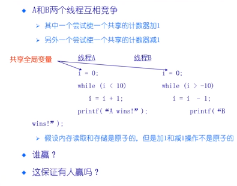

| 创建时间： | 2020/4/6 17:20 |
| 更新时间： | 2020/4/6 18:29 |
| 作者： | lzr |
一些概念（1）
（Race Condition）竞态调节
系统缺陷
怎样避免竞态？
原子操作（Atomic Operation）
原子操作是指一次不存在任何终端或者执行失败的指令
- 该执行成功结束
- 或者根本没有执行
- 并且不应该发现任何部分执行的状态
实际上操作往往不是原子的
- 有些操作看上去是原子的，但实际上不是
- 例如：x=y++
- 甚至有时候连单条指令都不是原子的，例如page fault
例：

临界区（Critical section）
临界区是指进程中的一段需要访问共享资源
并且当另一个进程处于相应代码区域时
便不会被执行的代码区域
- 互斥（Mutual exclusion）
当一个进程处于临界区并访问资源时，没有其他进程会处于临界区并且访问任何相同的资源
饥饿（starvation）
一个可执行的进程，被调度器持续忽略，以至于虽然处于可执行状态却不被执行
锁
- lock 锁：保护性装置，使得外人无法访问，需要开锁之后别人才能访问
- unlock 解锁：拿到保护性装置，使得可以访问之前被锁保护的东西
- deadlock 死锁：A拿到锁1，B拿到锁2，A想要锁2，B想要锁1。谁也不让谁，A和B都无法执行